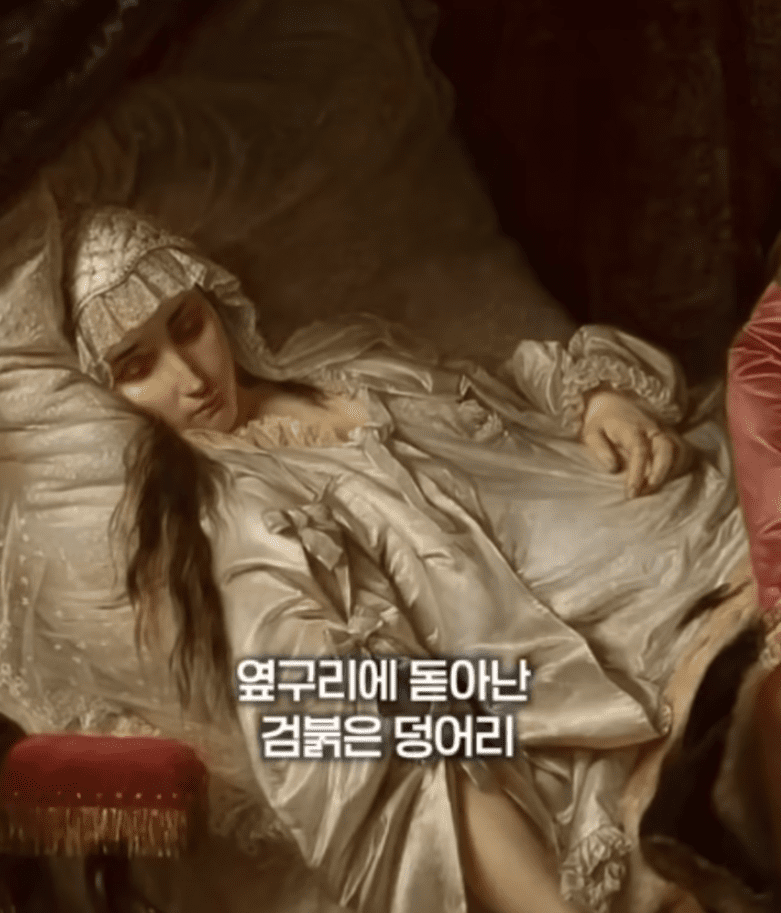
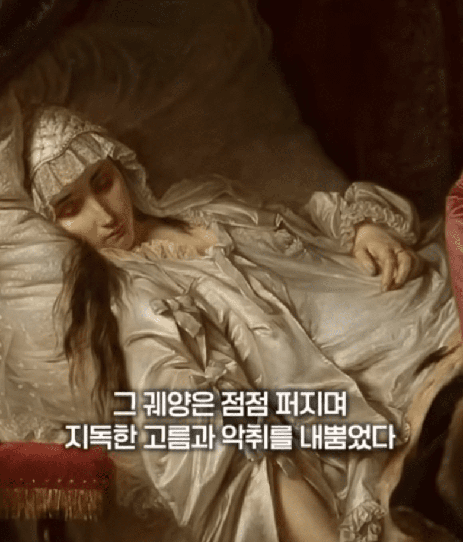
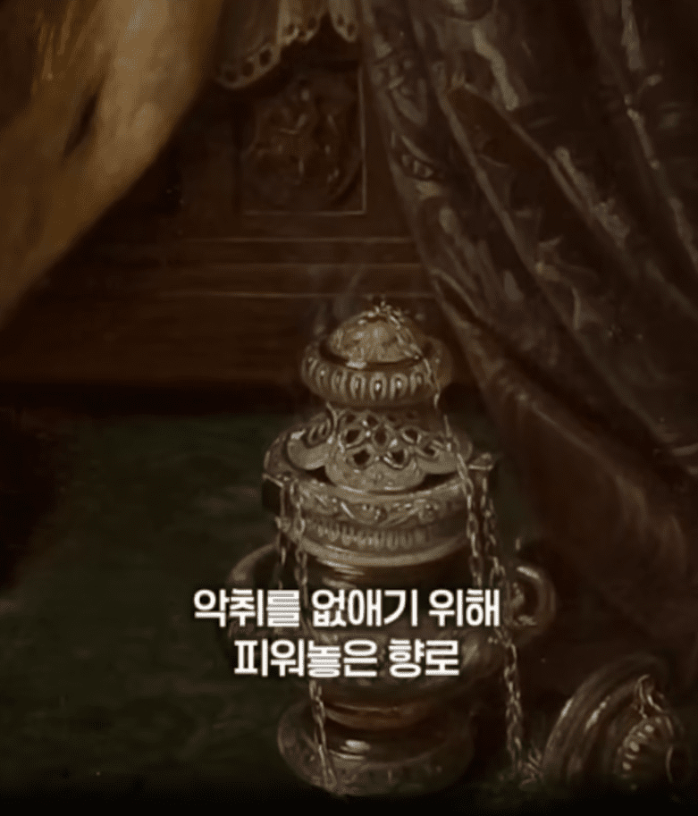
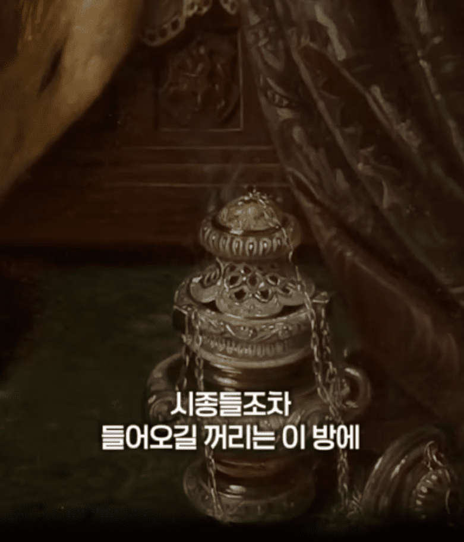
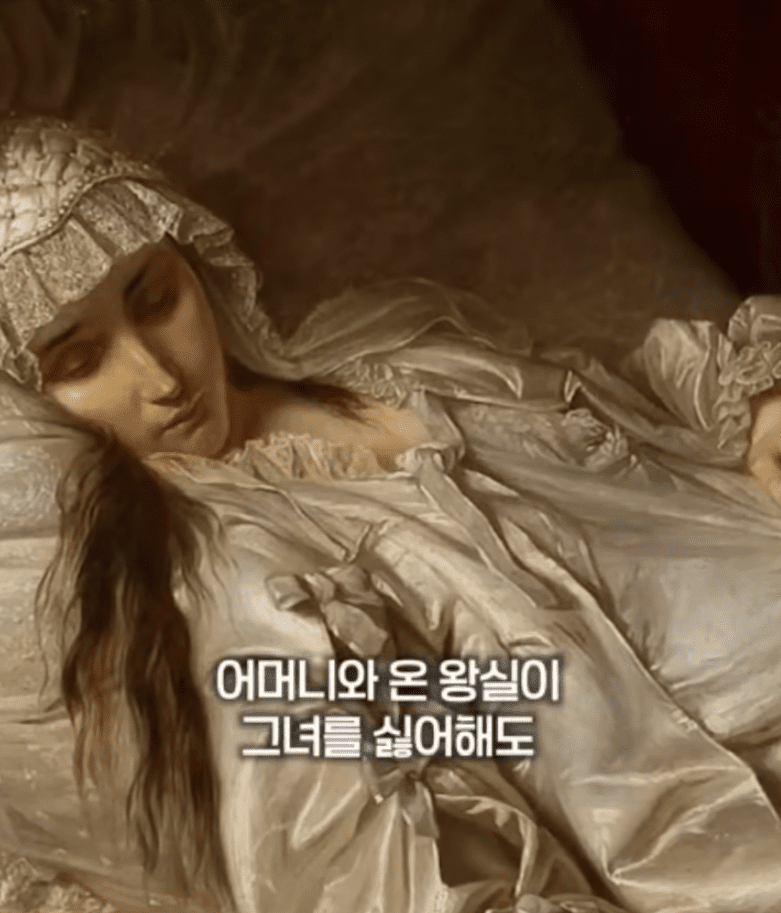
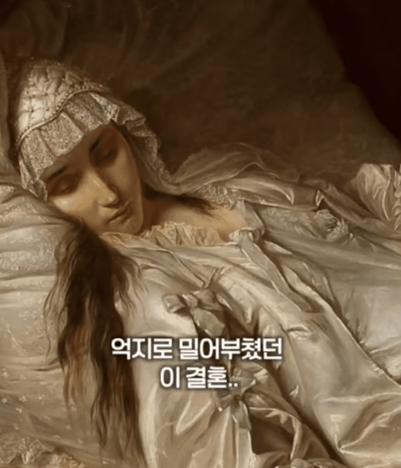
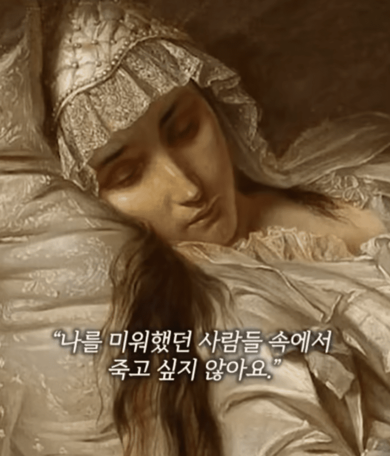
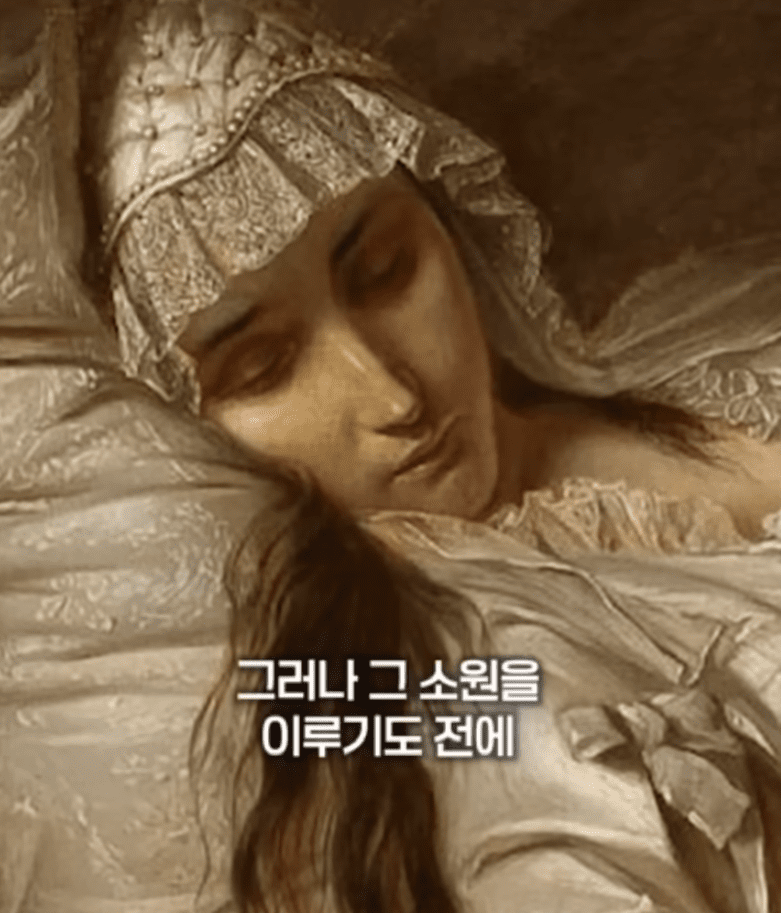
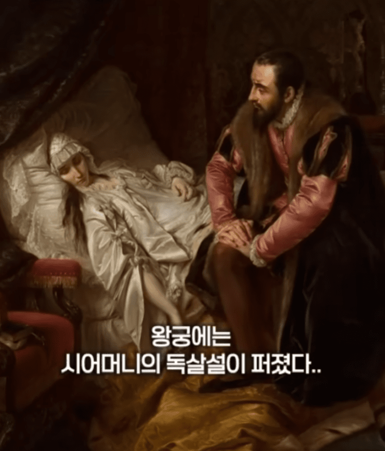
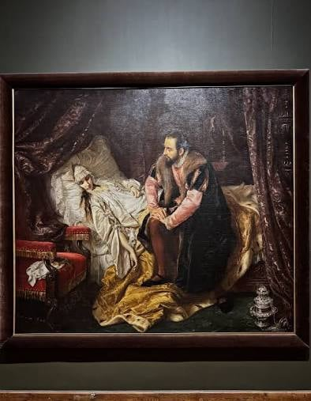

바르바라 라지비우의 죽음
유제프 짐러(1860)

이 그림은 16세기 폴란드의 왕 지그문트 2세와 왕비 바르바라 라지비우의 비극적인 사랑을 그린 작품이다.
왕은 성에서 나가고 싶다는 왕비의 소원을 이뤄주기 위해 그녀의 침대를 실을 수 있는 거대한 마차를 만들도록 명령했다고 한다.
완성된 마차는 너무 커서 성문을 통과하지 못했고 그러자 왕은 성문을 부숴서라도 길을 열으라 명령했다
하지만 성을 나가기 전에 왕비는 그만 숨을 거두고 만다
그림 속 왕의 눈물이 가득찬 모습은 지금까지도 사람들의 마음을 움직이는 걸작으로 평가받는다
댓글
수집 당시 댓글 29개
봇치쟝 · 11.27 09:20:38
아미야콘 · 11.27 09:20:59
· 아미야콘 · 11.27 09:26:27
ㅇㅇ · 11.27 09:27:20
· ㅇㅇ · 11.27 10:20:48
ㅇㅇ · 11.27 09:28:28
· ㅇㅇ · 11.27 10:20:35
· ㅇㅇ · 11.27 20:49:26
ㅇㅇ · 11.27 09:29:04
· ㅇㅇ · 11.27 09:55:41
파치카 · 11.27 09:29:17
ㅇㅇ · 11.27 09:33:15
ㅇㅇ · 11.27 09:34:10
· 랄랄라 · 11.27 14:34:31
kawa · 11.27 09:35:17
ㅇㅇ · 11.27 09:41:20
ㅇㅇ · 11.27 09:47:20
ㅋㅋ · 11.27 10:26:02
o o · 11.27 10:41:39
· 식물빌런 · 11.27 14:15:39
ㅇㅇ · 11.27 10:52:40
· ㅌㅌ · 11.27 15:00:18
ㅇㅇ · 11.27 11:05:06
tokyoh · 11.27 11:09:39
ㅇㅇ · 11.27 12:30:11
dmd · 11.27 12:46:29
Кошечка · 11.27 14:55:33
ㅇㅇ · 11.27 16:08:01
ㅇㅇ · 11.27 17:43:20